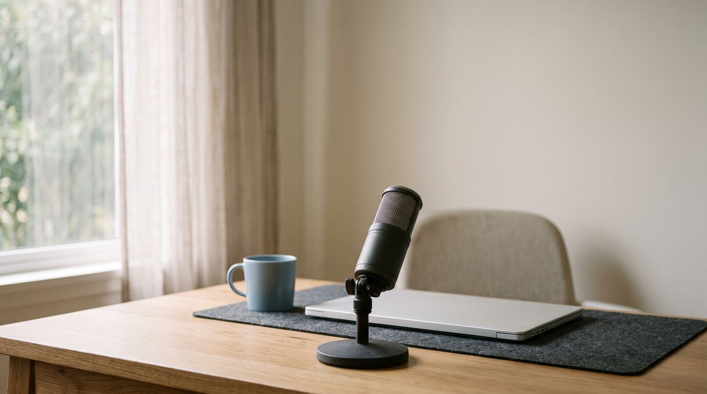
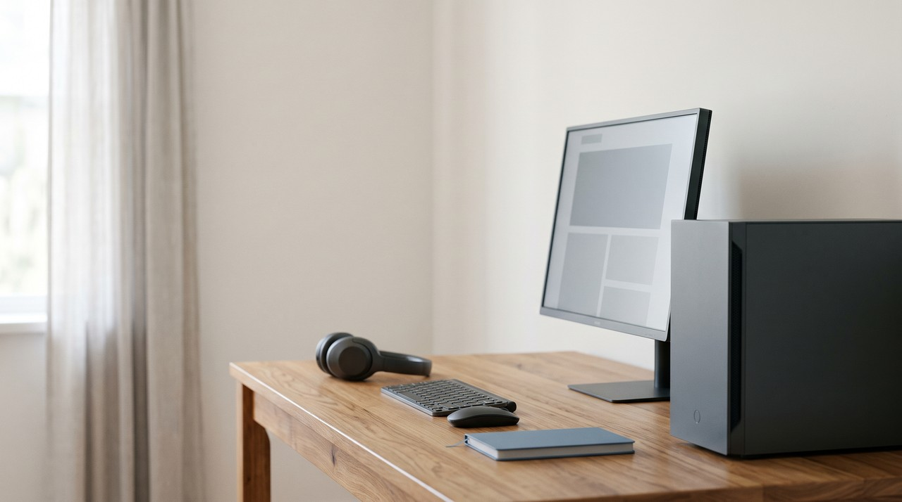

Murf AI alternative for voice cloning: Murf only clones your voice on Enterprise

A normal creator looking at Murf AI will find that it does clone voices, but not on the plans they usually buy. On Murf's own pricing page, the Creator plan for $19 a month, billed yearly, and the Business plan for $66 a month, billed yearly, only give you Murf's stock voices. Custom voice clones are just an add-on for the Enterprise plan, and that plan has no public price and starts with a sales call. If you only want your own voice, a local cloner like VoiceClone does it right on your own PC for a one time $49.
| Question | Murf AI Creator | Murf AI Business | Murf AI Enterprise | VoiceClone |
|---|---|---|---|---|
| Price | $19 a month, billed yearly ($228) | $66 a month, billed yearly ($792) | Custom, through sales | One voice free, then $49 one time |
| Clone your own voice | No, stock voices only | No, stock voices only | Yes, as an add-on | Yes |
| Voice generation | 24 hours a year | 96 hours a year | Unlimited | No limit after the license |
| Where it runs | Murf's servers, in the browser | Murf's servers, in the browser | Murf's servers | Your own Windows PC, offline |
| Voices and languages | 200+ voices, 30+ languages and accents | 200+ voices, 30+ languages and accents | Cloning in 20+ languages | Your voice, English only |
Written by Inam. I built VoiceClone, so read this comparison knowing that I am not neutral. My other engineering notes are on designesh.com. Last updated 29 September 2026.
I see a lot of people find Murf AI when they need a voiceover for a video or a course. The stock voices sound good, the editor is easy to use, and the pricing looks friendly for a single person. So you naturally think that you can just clone your own voice in there and use that instead.
That is where things get stuck. If you look on Murf's own pricing page, you will see cloning is not part of the Creator plan or the Business plan. It only shows up in the Enterprise list as "Custom Voice Clones (Add-on)", and the Enterprise plan has no price, just a Contact Sales button.
If you just want your own voice, buying a Creator or Business plan on Murf will not give it to you.
What do you actually get from Murf without Enterprise?
Those plans give you Murf's library of stock voices, and it really is a good library. On the Creator plan, Murf lists 200+ voices, 30+ languages and accents, unlimited downloads and commercial rights, along with 24 hours of voice generation a year. The Business plan adds a business license, more control over emphasis and pacing, and 96 hours a year. They also have a free plan that gives you 10 minutes to try, but it comes with no downloads and no commercial rights.
So if you need a narration in a voice that is not yours, the lower plans work fine. But every one of those voices belongs to Murf. You are just renting an AI copy of a voice actor, and your channel ends up sounding like every other channel that picked the exact same voice.
How do you get a voice clone on Murf, then?
When you visit Murf's voice cloning page, you will notice it does not have a sign up button. It only has a Contact Sales button and an Explore API button. The page talks about two kinds of cloning, a rapid clone made from a small amount of audio, and a professional clone that needs more samples and takes more time to deliver.
In plain words, cloning on Murf is treated as a business deal. You talk to their team, they quote you a price for an Enterprise plan with the clone add-on, and then your voice is trained and kept on their side. Murf does not publish that price anywhere, so I will not try to guess one here.
Why do cloud voice tools keep cloning behind a higher plan?
A little background helps here. A stock voice is made once and sold to thousands of customers, so it is cheap for the company to serve. A cloned voice is the opposite because it is trained for one person, and it has to be stored for that person. The company also has to check that the voice really belongs to you, so that means more work and more risk per customer, and that is why cloud tools usually put it on a higher tier.
Your voice also lives on their servers the whole time. Each line you generate is made on their computers, so the clone only works while your monthly or yearly plan is active. This is the cloud dependency problem, and it is the same one I wrote about when PlayHT closed and its users lost their voices.
The open source road avoids the monthly fee, but it swaps it for a different problem. Voice models like GPT-SoVITS are free, but you have to install Python, run commands in a terminal, and keep it all working by yourself. Most people who just want a voiceover for their project never get that far.
What does a voice you keep on your own PC look like?
The idea behind a local tool is simple. Instead of a voice that exists only as an account on someone's server, the voice is trained into files that sit on your own hard disk. Nothing has to check in with a server before it speaks, and there is no subscription plan that can lapse and take your voice with it.
That changes the money question too. When the work happens on your own computer, there is no per minute or per hour meter running. This is because the company is not paying for a server every time you press generate, so you pay for the tool itself, not for the hours.
How does VoiceClone do it, and where is Murf still better?
VoiceClone is a Windows app for Windows 10 and 11, and it is built on the open source GPT-SoVITS engine. This means you get that engine without needing any Python or terminal commands. You just record 1 to 3 minutes of your normal talking, the app checks the recording for noise, clipping and volume, and then it clones your voice. You type a script, and your own voice reads it right back to you.
For each line you type, the app makes several takes. Then a speech recognizer grades them word by word and hands you the best one. If a single word comes out wrong, you can redo just that word and keep everything around it. When you want a closer match, the Make it perfect button trains your voice properly, which takes under an hour with a normal NVIDIA graphics card, and a PC without one gets there too, just a bit slower. The first setup downloads about 1.3 GB once, and after that the app runs fully offline and uploads nothing.

The free version lets you clone and fully train one voice, then generate 3 times to hear it. The $49 one time license opens unlimited script length, the word editor, retraining and exports, and there is no subscription behind it at all. Everything you make with your own voice is yours to use, and that includes monetized videos and client work.
I want to be honest here, because Murf does do some real things better.
- Murf has 200+ stock voices, and VoiceClone only has your voice plus the 4 trained voices in the license. If you need many different characters for your work, Murf wins.
- Murf's page says its cloning works in 20+ languages, and VoiceClone speaks English only.
- Murf runs in the browser, so it is not tied to one operating system, and it has Canva and PowerPoint integrations. VoiceClone is just a Windows app.
- Murf has team seats, shared projects and enterprise security checks. VoiceClone is just a tool for one person to use on up to 2 of their own computers.
If you need lots of stock voices or other languages, you should stay with Murf. But if you only want your own voice, you do not need an Enterprise contract for it, and VoiceClone does it right on your PC for $49 once.
FAQ
Does Murf AI have voice cloning?
Yes, it does, but only for Enterprise customers. Murf's pricing page lists custom voice clones as an add-on of the Enterprise plan. The Creator and Business plans only include its stock voices.
How much does Murf voice cloning cost?
Murf does not publish a price for it. The Enterprise plan is marked as custom, so you have to contact their sales team to get a quote.
Is there a free Murf AI alternative for cloning my own voice?
VoiceClone lets you clone and fully train one voice for free, and then generate 3 times to hear the result. After that, a one time $49 license opens everything, and there is no monthly fee.
Can I use Murf voices on YouTube?
Murf's paid plans include commercial rights, so you can do this on the Creator plan and above. The free plan has no downloads and no commercial rights, so it is only there for trying the voices.
Sources: Murf AI's pricing page (Studio plans and the Enterprise feature list) and Murf AI's voice cloning page with its FAQ, both read on 29 September 2026, and the VoiceClone product page on myvoiceclones.com.
Hear your own voice come back.
The free Windows app clones and fully trains one voice, yours, on your own PC. No account, no upload, and the download starts right away.